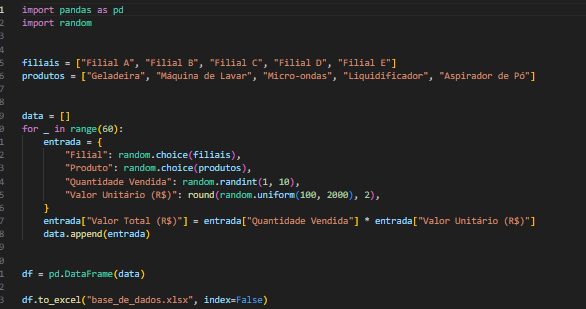
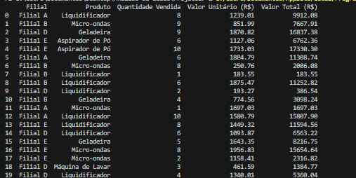
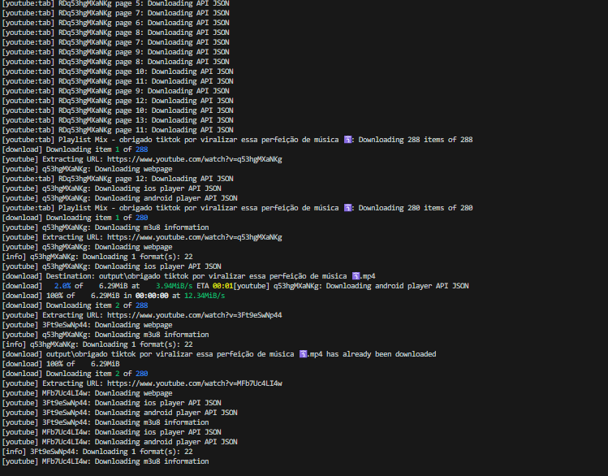

Projetos


WEB SCRAPING
A seguir, colocarei à mostrar 3 dos meus projetos relacionados ao tema.
Projeto 1°
Neste projeto, um determinado site de criptomoedas e acessado para extração de dados. São coletadas as informações de nome, preço e alteração de cada moeda presente no site. Ao término, esses dados são inseridos em um arquivo Excel para posterior tratamento.
A seguir, o projeto em pleno funcionamento.
Após o término da raspagem de dados, a planilha Excel será automaticamente gerada. É importante ressaltar que essa planilha será enviada automaticamente para o endereço de e-mail desejado.
Projeto 2°
Neste projeto, um determinado site de e-commerce para extração de dados. São coletadas as informações de nome e preço de cada item que existe no site. Ao término, esses dados são inseridos em um arquivo Excel para posterior tratamento.
A seguir, o projeto em pleno funcionamento.
Após o término da raspagem de dados, a planilha Excel será automaticamente gerada. É importante ressaltar que essa planilha será enviada automaticamente para o endereço de e-mail desejado.

Projeto 3°
Neste projeto,um determinado site atacadista e acessado para a extração de dados, coletando-se as informações de nome e preço de cada item existente no site. Ao término, esses dados são inseridos em um arquivo Excel para posterior tratamento.
A seguir, o projeto em pleno funcionamento.
Após o término da raspagem de dados, a planilha Excel será automaticamente gerada. É importante ressaltar que essa planilha será enviada automaticamente para o endereço de e-mail desejado.

AUTOMAÇÃO
A seguir, colocarei à mostra todos os meus projetos relevantes atuais relacionados ao tema.
Projeto 1°
A seguir, um pixel bot para o jogo Tibia que opera de maneira completamente autônoma, realizando caça e coleta de loot, entre outras funções.
O Tibia é um jogo que demanda considerável tempo e envolve tarefas massivas. Desenvolvi este bot para atender às necessidades daqueles que adotam um estilo de jogo dedicado à coleta de recursos in-game. Recomendo uma análise técnica mais aprofundada do código por meio do acesso ao meu repositório no GitHub.

O código opera com base no reconhecimento de imagens e utiliza uma thread para monitorar constantemente a vida e a mana do personagem. Quando os valores atingem a porcentagem especificada, o bot realiza ações como curar o personagem, usar poções e executar outras tarefas programadas.
Projeto 2°
"Neste projeto, automatizamos o envio de notas fiscais para um profissional que atua no setor de e-commerce. Ele anteriormente precisava revisar e processar cada nota fiscal individualmente, aplicando descontos com base no CNPJ da empresa e, em seguida, enviá-las para a Secretaria da Fazenda (SEFAZ). Com a automação implementada, esse processo foi simplificado e otimizado."
Uma vez que este projeto foi desenvolvido para terceiros, não tenho a capacidade de acessar o site com as credenciais (ID e senha) fornecidas. No entanto, posso compartilhar o trecho do código que implementa o cálculo dos descontos nas notas fiscais.
Lembrando que para uma análise mais detalhada do código, convido a todos a acessarem o meu repositório no GitHub, onde encontrarão o código fonte completo e documentação associada ao projeto.
Projeto 3°
Considerando a complexidade em adquirir conjuntos de dados estruturados contendo propostas autênticas, decidi desenvolver um sistema gerador automático de conjuntos de dados.
Aqui está um conjunto de dados gerado automaticamente por mim, com a capacidade de realizar alterações em diversos parâmetros, incluindo o nome de cada filial, os produtos passíveis de venda, as quantidades vendidas e os valores. É possível gerar de 1 a 10.000 linhas de informações, tanto de forma aleatória quanto não aleatória.
Aqui está um código simples e notavelmente eficaz. Assim como eu, este código tem o potencial de auxiliar diversos estudantes na área de análise de dados, fornecendo conjuntos de dados valiosos para fins de treinamento.
ANALISE DE DADOS
A seguir, colocarei à mostra todos os meus projetos relacionados ao tema.
Projeto 1°
Utilizando um conjunto de dados gerado por meio de um programa de criação de dados randômicos que desenvolvi, procedi com uma análise de dados da seguinte base:
O meu desafio consistiu em extrair as seguintes informações: "faturamento total de todas as filiais", "faturamento por loja" e "faturamento por produto".
Iniciei o processo extraindo o faturamento total de cada filial.
Em seguida, observei que a FILIAL E estava apresentando uma rentabilidade significativamente superior em comparação com as outras filiais, chegando até a ser duas vezes maior que a FILIAL A. Isso despertou a necessidade de compreender o motivo por trás dessa disparidade.
Portanto, decidi proceder com a extração das vendas por produto em cada uma das filiais.
Consequentemente, descobri que a FILIAL E apresenta um valor de vendas notavelmente superior em relação aos produtos "aspirador de pó" e "liquidificador", em comparação com as outras filiais.
Outros
A seguir, apresento outros projetos que não guardam correlação com os tópicos previamente discutidos, mas que considero apropriados para inclusão neste contexto.
Projeto 1°
Além deste próprio portfólio, que foi desenvolvido exclusivamente por mim, utilizando CSS3, HTML5 e uma contribuição em JavaScript, também realizei o desenvolvimento do seguinte projeto web, empregando HTML5, CSS3, JavaScript e Flask.
O projeto é um downloader para vídeos do YouTube, desenvolvido utilizando Python e Flask.
Ao colar qualquer URL do YouTube que contenha um vídeo, música ou até mesmo uma playlist de vídeos ou músicas, você tem a capacidade de baixar o vídeo ou a música a partir da URL.
Aqui está o resultado dos vídeos e músicas baixados.